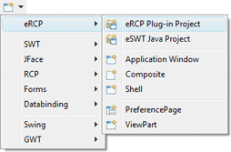
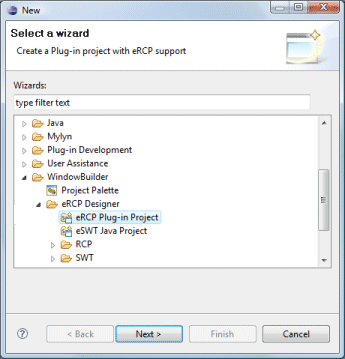
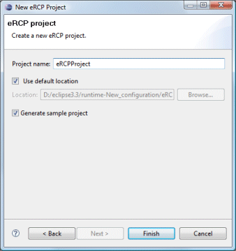
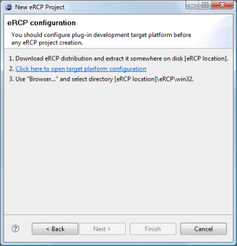

|
In order to use Eclipse SWT, JFace and RCP components,
you need to make sure that all of the appropriate SWT, JFace
and RCP jar files are on your classpath. The eRCP Plug-in Project
wizard creates a standard eRCP Plug-in project which has all of the needed
libraries added.
The wizard can be
selected from the drop down WindowBuilder wizard menu or from the
Eclipse New or New Project wizards.
To use the wizard, enter the project name and specify where the project should be located. Choose whether to create some initial sample content and hit the Finish button.   The wizard creates a plug-in project and generates content for the MANIFEST.MF file similar to the following.
 Note that before you can create an eRCP Plugin Project, you need to download and install a eRCP distribution from Eclipse.org and configure Eclipse to use it as your target platform:
|